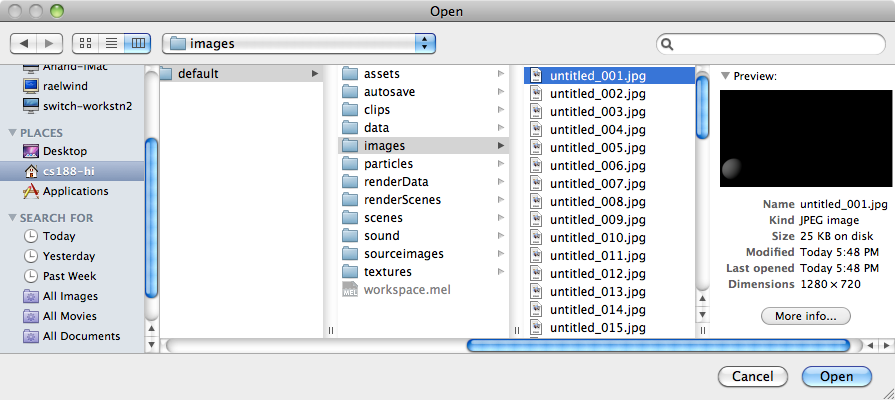
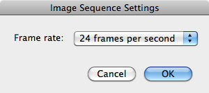
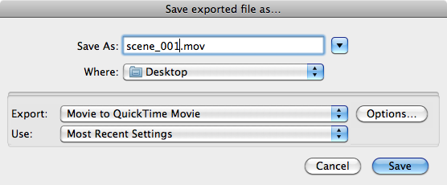
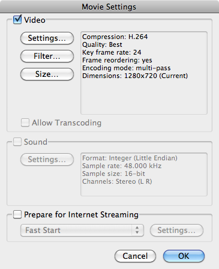
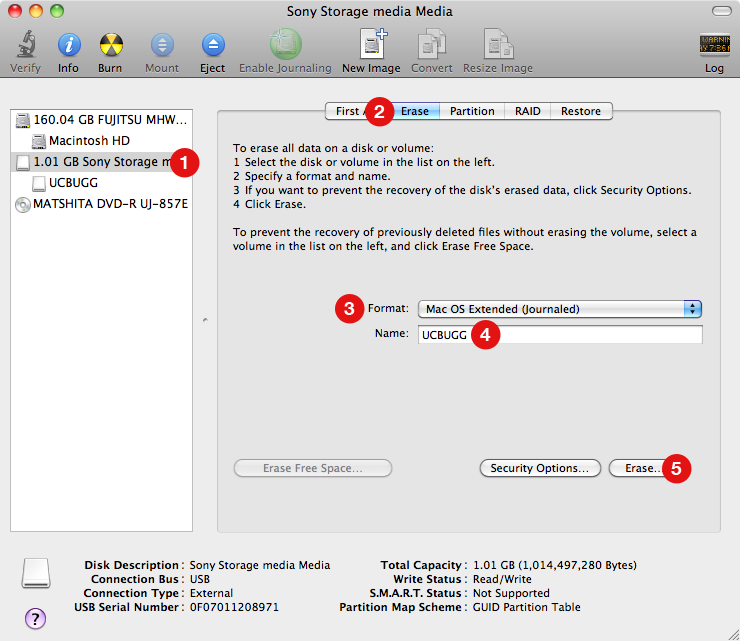

Editing Your Animation
We'll now turn your multiple image sequences into a finished animation. You should be excited.
Create Movie Files from Image Sequences
We'll be using Quicktime Pro to turn image sequences into actual movie files. We create image sequences with batch rendering If you don't have an image sequence to use, go ahead and download our sample image sequence.
Opening an Image Sequence
Open Quicktime Player 7, not just Quicktime Player. It's located in /Applications/Utilties/Quicktime Player 7. Go to File → Open Image Sequence... and locate the first (and only first) file in your image sequence and click "Open".

Select "24 frames per second".

Go ahead and press play to watch your animation (it might be a bit slow).
Saving your Scene
Now it's time to save your scene as an actual file. Go to File → Export... and select "Movie to Quicktime Movie" from the Export dropdown menu.

Click on the "Options" button and make your settings match the image below. Compression, Quality, and Key Frame Rate are set by clicking on the "Settings..." button. The size should be 1280x720 if you are rendering in 720HD, or 1920x1080 if you are rendering in 1080HD. Click "OK" once you're done.

Click "Save" to finish exporting your movie.
Now that all your scenes have been saved, we will edit them in iMovie.
Edit With iMovie
Now that you have all your scenes in separate movie files, it's time to edit them together.
Before you start, you will need an external flash drive, preferably with at least 4gb of space. Make sure there is nothing important on the drive, as we will be reformating (erasing) the drive.
Reformat Your Flashdrive
First, plug your flashdrive into the computer and wait for it to mount. Open Disk Utility, found in /Applications/Utilities/Disk Utility
- Select the flashdrive on the left
- Click the "Erase" button.
- Select Mac OS Extended (Journaled) from the Format dropdown
- Pick a name.
- Click the "Erase..." button and then click "Erase" on the pop up

NOTE: You will not be able to read/write from this drive on a Windows computer. Consider yourself warned.
For the rest of the tutorial, the flashdrive will be named UCBUGG.
Setup iMovie
Before we starting editing, we need to change a setting in iMovie. Open up Terminal, found in /Applicatoins/Utilities/Terminal, type
defaults write -app iMovie allowNV -bool true
and hit return.
iMovie is now ready to be used.
Find Sound Effects and Music
ccMixter
ccMixter is a community music site featuring remixes licensed under Creative Commons where you can listen to, sample, mash-up, or interact with music in whatever way you want.
opSound
Musicians and sound artists are invited to add their work to the Opsound pool using a copyleft license developed by Creative Commons. Listeners are invited to download, share, remix, and reimagine.
The FreeSound Project
The Freesound Project is a collaborative database of Creative Commons licensed sound effects